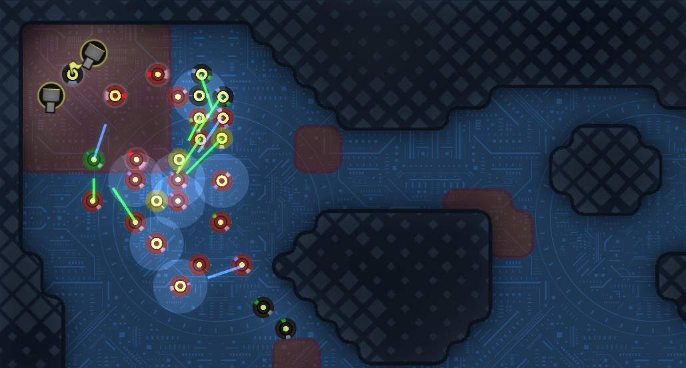
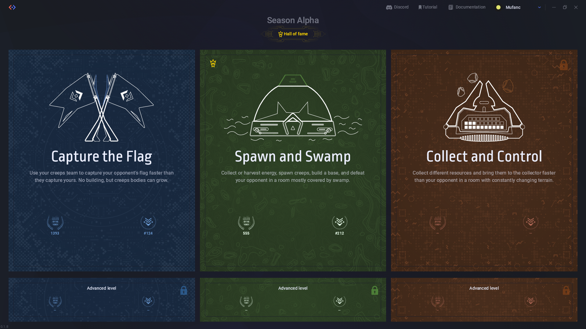
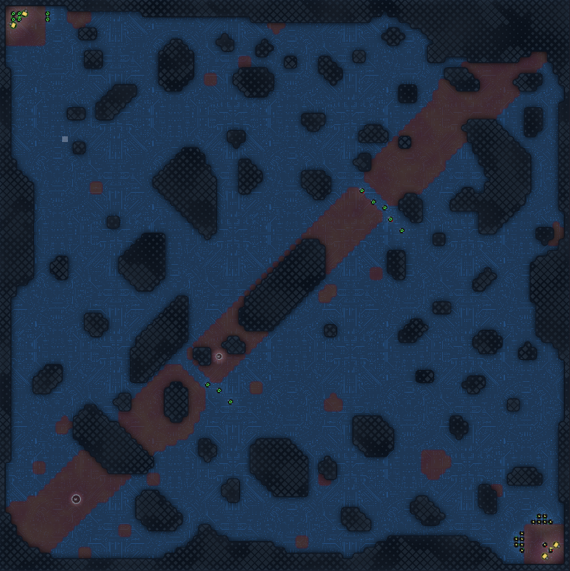
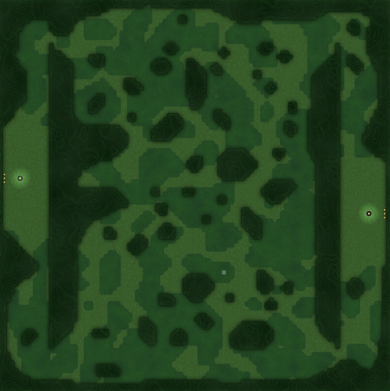

Screeps: Arena 初体验
在朋友推荐下入坑了这款 RTS 神作，与传统 RTS 游戏不同，Screeps: Arena 使用真 · JavaScript 语言编写脚本来控制你的机器人（Creep）与对方机器人战斗，一旦战斗开始，便无法再做任何输入，最终胜负完全取决于你的 AI 写得有多好。

先贴一个 Steam 商店链接，相比前作 Screeps: World，Screeps: Arena 采用了 1v1 匹配的对战模式，对新手更加友好（不会暴毙）。一个比较有趣的点是，系统会记录每位玩家不同时期的代码，根据玩家所在的分段来匹配对手，所以大可不必担心一上来就遭到大佬的虐杀~~
每个机器人 Creep 都可以携带一些被称之为「BodyPart」的模块，不同的 BodyPart 能给 Creep 提供不同的能力。例如 MOVE 模块提供了移动能力，HEAL 模块提供治疗能力，还有提供攻击、搬运、采矿等等能力的模块，当一个模块受到攻击时，它的能力会随之不断减弱。当所有模块都被破坏，会造成这个 Creep 的死亡，表现为 Creep 从地图上消失，也无法再通过治疗等手段恢复其机能
除了可移动的 Creep 外，还有一些不可移动的 Structure，同样拥有各种各样的能力，例如 StructureSpawn 能够消耗能量产生新的 Creep，StructureTower 能够消耗能量攻击或治疗一定范围内的 Creep 等等……
这游戏有三种模式，Captute the Flag、Spawn and Spawn 和 Collect and Control

CTF 模式顾名思义，开局时双方位于地图对角的位置，各有 6 个远程、6 个治疗、2 个肉盾和 2 座塔，共 14 个单位，首先控制 Creep 占据对方 Flag 的一方获得胜利，比较考验玩家的战术把握和 Creep 之间配合作战的能力

我的 v1 版本代码采用了「按兵不动，关门打狗」的战术，开局直接窝在家里休息，等待对方冲过来之后配合两座 Tower 将敌方主力部队一举歼灭，然后再冲过去收拾敌方的残兵败将，配合简单的优化竟能达到 1400 分段上下，远远超出了我的预期
Spawn and Swamp 模式相对复杂一些，双方各占据地图一侧，初始拥有一个 Spawn 结构和 8000 点能量，通过地图中间的「沼泽地区」展开交锋，率先摧毁敌方 Spawn 即可获得胜利，相比 CTF 模式来说更加考验对于战术和整体局势的把握，也是我认为最有意思的一个模式

工欲善其事，必先利其器，最近正在疯狂给 API 做封装和造轮子（顺便练习 TypeScript），以实现更加丝滑的 AI 编写体验，同时也会参考大佬们的一些设计思路和实现方式，代码已经开源至 GitHub，希望能给有兴趣入坑这款游戏的同学提供一些简单的参考：